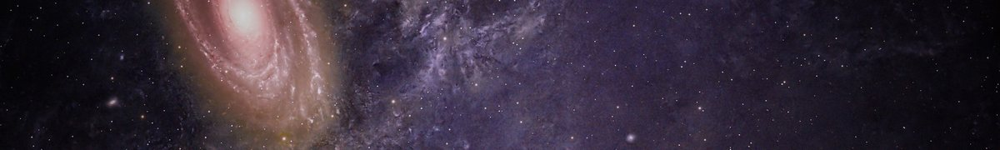

This website uses information and images from the following sources.
- Abbott, B.P. et al. (2016) 'Observation of gravitational waves from a binary black hole merger', Physical Review Letters, 116(6), 061102.
- Anthropic (2026) Claude Sonnet 5.5 [Large language model]. Available at: https://claude.ai
- Artist's impressions of black holes (n.d.) [Images supplied by the author; original sources to be confirmed].
- Drljaca, U. (n.d.) Digital artwork of streaks circling a black hole [Photograph]. Pexels. Available at: https://www.pexels.com/photo/29431263/
- Event Horizon Telescope Collaboration (2019) 'First M87 Event Horizon Telescope results. I. The shadow of the supermassive black hole', The Astrophysical Journal Letters, 875(1), L1.
- Gahramanow, S. (n.d.) Andromeda galaxy [Photograph]. Pexels. Available at: https://www.pexels.com/photo/39076461/
- Hawking, S.W. (1974) 'Black hole explosions?', Nature, 248(5443), pp. 30-31.
- Hawking, S. (1988) A brief history of time. London: Bantam Press.
- Lord, S. (n.d.) Galaxies in a purple nebula [Photograph]. Pexels. Available at: https://www.pexels.com/photo/37761980/
- Mueller, J. (n.d.) Andromeda galaxy [Photograph]. Pexels. Available at: https://www.pexels.com/photo/5882866/
- NASA (2026) Black holes. Available at: https://science.nasa.gov/universe/black-holes/
- Nobel Prize Outreach (2020) The Nobel Prize in Physics 2020. Available at: https://www.nobelprize.org/prizes/physics/2020/summary/
- Resic, A. (n.d.) Black hole with a glowing accretion disk [Photograph]. Pexels. Available at: https://www.pexels.com/photo/37149440/
- Schwarzschild, K. (1916) 'Über das Gravitationsfeld eines Massenpunktes nach der Einsteinschen Theorie', Sitzungsberichte der Königlich Preussischen Akademie der Wissenschaften, pp. 189-196.
- W3C (2026a) CSS validation service. Available at: https://jigsaw.w3.org/css-validator/
- W3C (2026b) Markup validation service. Available at: https://validator.w3.org/

Black holes are not the end, but a beginning of a deeper understanding of our universe.
AI assistants (Anthropic, 2026) helped draft the content of this website.